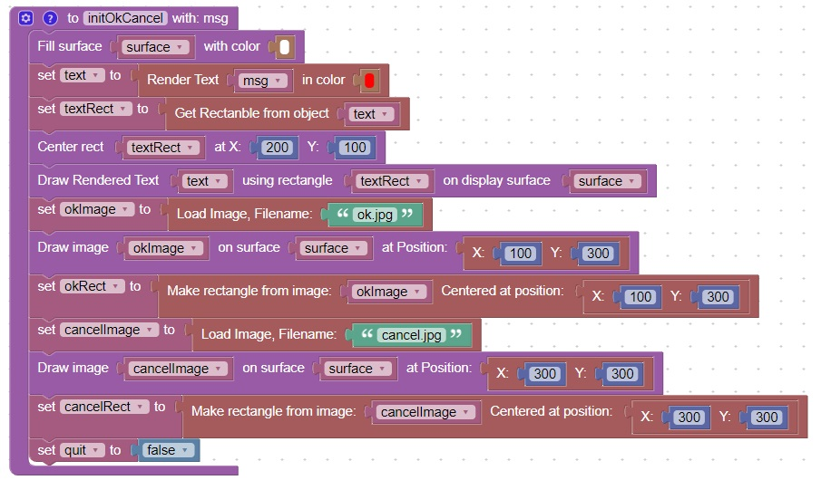
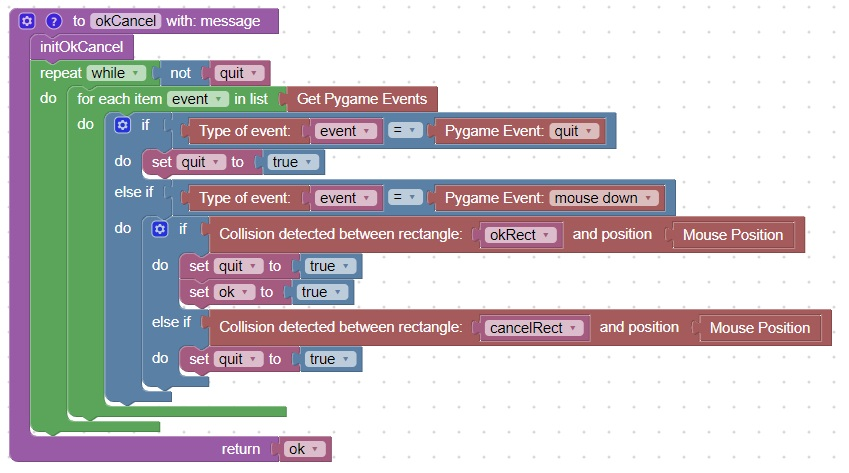
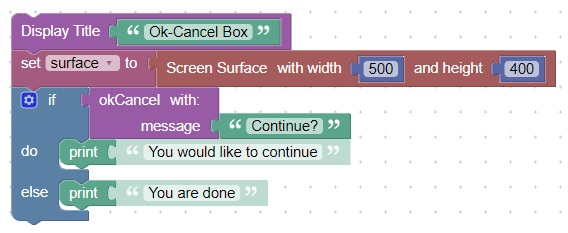
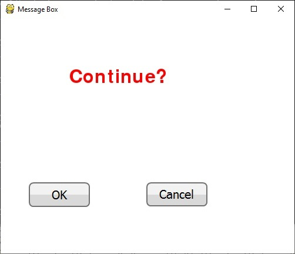
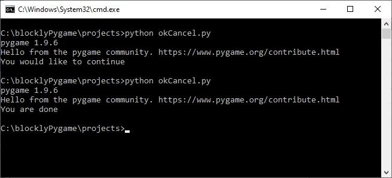

Ok-Cancel Message Box
This code will initialize the variables required for the ok/Cancel function

This code will perform an ok/Cancel function

This code will shows an example call of the ok/Cancel function

This is what the screen looks like when it is executed

This is what the console looks like when it is run twice and ok is selected the first time, and cancel is selected the second time
